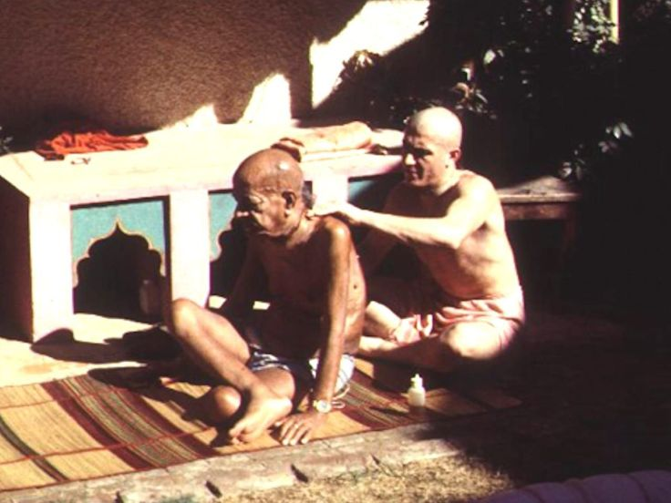

Pastime Never heard Before.
Posted on : 20th January, 2025

That day i was massaging Srila Prabhupād and i was continuously talking as if Prabhupād and me would take over the entire world. And i was preparing him for next battle. As I was talking suddenly Prabhupād shouted Don't do it! I was terrified, my hands were shaking but next he spoke in a voice of a child, soft as a 7 year old boy “I am just a servant of the lord” I was so humbled at that moment I realized here is such an aristocrat and me such a poor egoistic person what to speak of touching his body I should not be allowed even to be in this room.
Prabhupād was always humble because he always remembered His guru maharaj and Lord Krsna.
~ HH Trivikrama Swāmi, 19-Jan-2025. Thane, Mahārashtra.